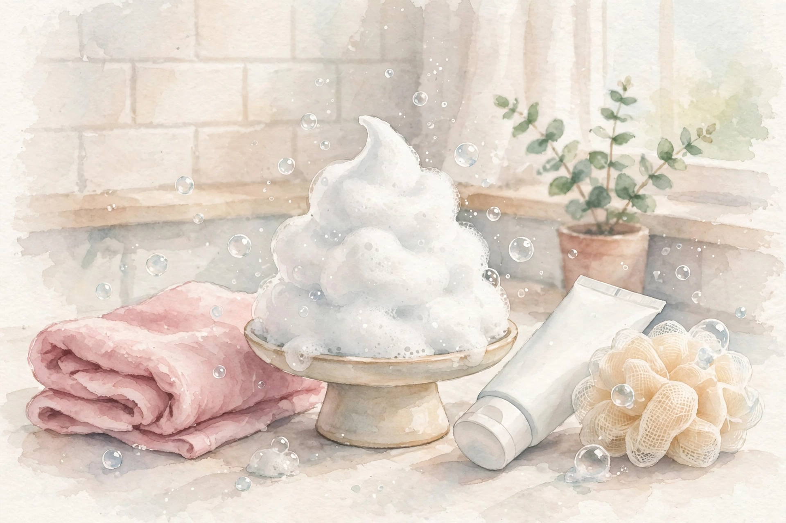

泡洗顔の泡の量と洗う時間の目安

洗顔は、スキンケアの中でいちばん毎日繰り返す手順です。それだけに「泡はどれくらい必要か」「何分くらい洗えばいいのか」で迷う方も多いようです。施術の現場でも、洗う工程は時間の測り方ひとつで仕上がりの感触が変わります。この記事では、泡の量と洗う時間の目安の作り方を整理します。
泡の量は「手のひらに山ができるくらい」
泡立てネットや手のひらで泡立てるタイプは、泡の量そのものが目安になります。手のひらをすぼめたときに、こんもりと山ができるくらいがひとつの目安です。泡の硬さは、手を傾けても簡単には落ちない程度が扱いやすいと感じます。泡がゆるいと、洗っているうちにへたってしまい、つい指でこすりたくなります。
ポンプを押すと泡で出てくるタイプは、量が「◯プッシュ」という表示で案内されていることが多いです。その場合は表示のプッシュ数が基準になります。どちらのタイプでも、商品の使い方の表示があれば、まずそれに従うのが基本です。
洗う時間は「測る」より「順番を一巡する」
洗う時間を秒数で決めるより、部位の順番を決めて一巡させる方が、洗い残しに気づきやすくなります。私は、皮脂の出やすい額と鼻まわりから始めて、頬、あご、目元という順番を目安にしています。順番が決まっていれば、一巡する時間がそのまま自分の洗う時間になります。
長く洗えばよい、というものでもありません。時間を延ばすより、泡を顔全体に行き渡らせることと、すすぎを丁寧にすることに時間を使う方が、結果として手順全体の質が上がります。タイマーを使う場合は、まず一巡の時間を測ってみて、自分の基準を作るのがおすすめです。
すすぎは、残りやすい場所を決めて確認する
すすぎ残しが多いのは、生え際、耳の前、フェイスライン、小鼻の脇といった、指が届きにくい場所です。施術では、このあたりを最後に指でなぞって確認するのが習慣になっています。自宅でも、すすぎの最後にこの4か所を触って確かめる手順を入れておくと安心です。
泡の量、洗う順番、すすぎの確認。この3つが決まると、洗顔は毎日の「なんとなく」から「自分の手順」に変わります。
泡立て方の道具についても触れておきます。泡立てネットを使うと、少量の洗顔料でも早く泡が作れます。手のひらだけで泡立てる場合は、水の量の加減で泡の硬さが変わります。水が多すぎると泡はゆるくなり、少なすぎると泡が重くなります。私は、泡の状態をまず道具の上で整えてから顔に運ぶ、という順番を意識しています。泡の出来は、その日の洗顔の進めやすさを左右する土台です。新しい洗顔料に変えたときは、最初の数回で「この商品はどのくらいの量で、どのくらいの泡になるか」を確かめておくと、毎日の手順が安定します。
セラフィナ「泡は山ができるくらい、時間は順番を一巡。自分の基準があると迷わないね」